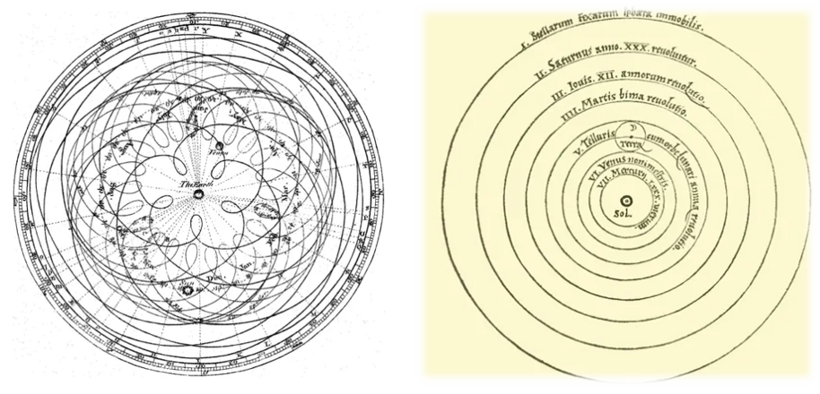

케플러 법칙의 과학사적 의의
1. 왜 케플러 법칙인가?
오늘 수업은 케플러 법칙을 다룹니다. 물리 시간에 갑자기 케플러가 왜 나오나 싶으실 수 있는데, 다 이유가 있습니다.
우리는 지금 중력의 정체를 탐구하는 중입니다. 만유인력에서 출발해서 결국 블랙홀까지 가는 것이 이 수업의 최종 목적지입니다. 그 긴 여정에서 케플러 법칙은 빠져서는 안 되는 출발점이에요.
교과서에는 케플러 법칙의 내용만 나옵니다. 문제만 풀지요. 하지만 이 법칙이 왜 중요한지, 어떤 맥락에서 탄생했는지는 아무도 설명해 주지 않습니다. 오늘은 그 이야기를 해 보려고 합니다.
2. 두 인물: 티코 브라헤와 케플러
(1) 티코 브라헤
티코 브라헤는 망원경이 발명되기도 전의 인물입니다. 망원경은 갈릴레오 갈릴레이가 발명했지요.
그런데도 티코 브라헤는 당대 전 세계에서 별을 가장 정확하게 관측한 사람이었습니다. 오직 육안으로만 별의 미세한 위치 변화를 추적하며 수십 년치 데이터를 쌓아 올렸습니다.
그 실력이 소문이 나서 왕실 천문학자로 발탁됩니다. 당시 왕들은 별점을 쳤습니다. 점성술이에요. 내일 전쟁에서 이기겠냐, 흉년이 들겠냐—별의 움직임으로 예언을 하는 역할이었습니다. 덕분에 티코는 왕실의 지원을 받아 천문대까지 세울 수 있었습니다.
그 천문대에서 쌓은 데이터가 어마어마했습니다. 티코는 이 데이터를 조수에게도 함부로 보여주지 않을 만큼 철저히 관리했습니다. 그만큼 귀한 자료였으니까요.
(2) 요하네스 케플러
케플러는 원래 신부가 되려 했습니다. 신학을 공부하다가 수학이 너무 재미있어서 방향을 틀었지요. 그 수학적 재능 덕분에 티코 브라헤의 조수로 채용됩니다.
케플러는 티코의 관측 데이터만 볼 수 있다면 뭔가를 해낼 수 있을 것 같았습니다. 그런데 티코가 좀처럼 보여주지 않았어요.
그러다 기회가 찾아옵니다. 티코가 갑자기 죽어 버린 거예요. 왕의 연회에 초대받아 갔다가 오랜 시간 화장실을 가지 못한 채 버텼던 티코는 결국 방광염에 걸려 사망합니다. 케플러는 드디어 그 데이터를 손에 넣게 됩니다.
그리고 그 데이터를 컴퓨터도 없이 오로지 손 계산으로 분석해서 행성 운동의 법칙을 밝혀냈습니다.
3. 케플러 이전의 천문학

프톨레마이오스의 천동설은 지구가 중심에 고정되고 태양과 행성들이 그 주위를 돈다는 모델입니다. 코페르니쿠스의 지동설은 반대로 태양이 중심에 있고 지구가 그 주위를 돕니다. 단순하고 우아해 보이지요. 그런데 두 이론 모두 행성 궤도를 원이라고 가정했습니다. 그래서 코페르니쿠스의 지동설도 정확도 면에서는 기존 천동설보다 딱히 낫지 않았어요. 과학자들이 지동설을 처음부터 환영하지 않았던 이유가 바로 그것입니다.
4. 케플러 제1법칙: 타원 궤도의 법칙
모든 행성은 태양을 하나의 초점으로 하는 타원 궤도를 그리며 공전합니다.
왜 '타원'이라는 사실이 그토록 중요한가?
케플러 3법칙 중 제1법칙이 가장 근본적입니다. 단순히 '행성이 어떤 모양으로 도느냐'의 문제가 아니에요. 수천 년 동안 인류가 당연하게 믿어온 것을 정면으로 뒤집은 것입니다.
코페르니쿠스도, 프톨레마이오스도, 그 이전의 모든 천문학자도 행성 궤도는 원이라고 생각했습니다. 왜 하필 원이었을까요? 당시 사람들에게 원은 완전한 도형이었습니다. 신이 만든 천상의 존재라면 당연히 가장 완전한 모양이어야 한다는 믿음이 천 년 동안 의심 없이 이어져 온 것입니다.
케플러 역시 그렇게 믿었습니다. 그런데 티코 브라헤의 데이터는 달랐습니다. 데이터는 타원을 가리켰습니다.
케플러의 내적 갈등
케플러는 원래 카톨릭 사제가 되고 싶어 했던 사람입니다. 독실한 기독교인이었던 그는 "하나님이 이 세상을 불완전하게 만들었을 리가 없다"고 믿었습니다. 다른 사람들이 그랬던 것처럼, 행성 궤도는 하나님의 작품이기 때문에 무조건 완벽한 원이어야 한다고 생각한 것입니다.
심지어 케플러는 당시 알려진 다섯 행성(수성·금성·지구·화성·목성·토성)의 궤도가 정다면체 구조 안에 아름답게 배치되어 있다는 이론을 진지하게 발표하기도 했습니다. "하나님은 우주를 기하학적으로 완벽하게 설계했다"는 믿음이었습니다.
그러나 데이터는
티코 브라헤가 남긴 데이터는 타원을 가리키고 있었습니다.
신념(신앙)이냐, 데이터냐.
케플러는 데이터를 선택했습니다. 이것이 제1법칙의 진짜 의미입니다.
5. 케플러 법칙의 과학사적 의의: 데이터가 신념을 이긴 순간
이것이 오늘 수업의 핵심입니다.
저는 케플러를 '최초의 근대인'이라고 부릅니다. 그 이유는 3법칙을 발견해서가 아닙니다. 자신이 평생 믿어온 신념보다 데이터를 선택했기 때문입니다.
종교와 교회의 권위에 기대어 세계를 이해하던 시대에서, 관측과 데이터로 세상의 진리를 밝혀낼 수 있다는 시대로의 전환—그 첫 번째 사례가 바로 케플러였습니다.
'데이터로 사고한다'는 것은 얼마나 오래된 일인가?
오늘날 '데이터에 근거해서 결론을 내린다'는 것은 당연해 보입니다. 하지만 이 사고방식이 인류의 주류가 된 것은 불과 200~300년 전의 일입니다.
신의 말씀(성경)이나 교회를 통해서 우리에게 진리가 계시되는 것이 아니라, 내가 관측한 데이터를 통해 우리는 진리에 도달할 수 있다는 아이디어— 계시가 아닌 이성을 통해 진리에 도달할 수 있다는 이 사고방식은 생각보다 훨씬 최근의 것입니다.
과학자란 어떤 사람인가
아인슈타인은 어땠나요? 처음에 그는 '우주는 정적이어야 한다'는 신념을 오래 고집했습니다. 프리드만이라는 젊은 과학자가 일반 상대성 이론 방정식을 풀어 우주가 팽창·수축·정적, 세 가지 중 하나라는 것을 보여줬을 때 그는 받아들이지 않았습니다. 자신이 발표한 일반 상대성 이론으로부터 논리적으로 도출되는 결론인데도 말이죠. 오히려 그는 자신의 일반 상대성 이론이 '어떤 결함'을 가지고 있는 거라고 생각하기도 했습니다.
결국 허블이 아인슈타인을 자신의 천문대로 직접 초청하게 되었지요. 은하들이 실제로 멀어지고 있다는 허블의 관측 데이터를 눈앞에서 보여줬을 때, 이 물리학 최고의 지성은 자신이 틀렸음을 비로소 수긍했습니다.
내 생각은 A라고 해도 데이터가 B를 가리키고 있을 때, 결국 자기 생각을 버리고 B를 선택할 수 있는 사람, 그가 바로 과학자입니다.
반대로 자기 말에 근거 없이 아무말 대잔치를 하고, 자기 주장에 맞는 근거만 찾아내고, 자기 마음에 불편한 데이터를 무시하는 태도는 과학이 아닙니다. 케플러 법칙을 배우는 진짜 이유가 여기에 있습니다. 타원이냐 원이냐의 문제가 아니라, 어떤 근거로 세계를 판단하느냐의 세계관 문제입니다.
6. 케플러에서 뉴턴, 그리고 아인슈타인으로
케플러 법칙은 행성이 '어떻게' 움직이는지를 기술합니다. 하지만 '왜' 그렇게 움직이는지는 설명하지 못했습니다.
뉴턴이 그 '왜'에 답했습니다. 만유인력 법칙 하나로 케플러의 3법칙을 모두 수학적으로 유도해냈습니다. 이것이 고전 역학의 핵심 성취입니다.
아인슈타인은 한 발 더 나아갔습니다. 중력을 '힘'이 아닌 '시공간의 휘어짐'으로 재해석했습니다. 그리고 블랙홀, 사건의 지평선, 슈바르츠실트 반지름으로 이어집니다.
케플러의 타원 궤도 하나가 이 모든 이야기의 출발점입니다.
생각해볼 것
- 케플러는 왜 '원'이 아닌 '타원'이라는 결론을 내리기 어려웠을까요?
- 내 생각과 데이터가 충돌할 때, 나는 어느 쪽을 선택하는가요?